【ニンテンドー3DS】C to C対応のUSB Type-C端子に改造する方法

ニンテンドー3DSをUSB Type-Cで充電可能に
ニンテンドーDSi、DSi LL、3DS、3DS LL、2DS、Newニンテンドー3DS、3DS LL、2DS LLには共通して任天堂独自の充電端子が搭載されている。 これらが発売された当時は、カメラはMini USB Type-B、AndroidスマートフォンはMicro USB Type-B、iPhoneはLightningなど、機器ごとに充電端子がバラバラだった。 しかし現在では、Nintendo SwitchやiPhoneをはじめ、多くの機器がUSB Type-Cに統一されている。 そのため、USB Type-Cケーブルしか持っていない人も増えているだろう。 そこで3DSもType-Cで充電できるようにすれば、専用ケーブルが不要になり、利便性が大幅に向上する。 こうした需要から、3DSをType-C化するサービスをあすか修繕堂が日本でほぼ唯一提供している。 しかしそのサービスでは、同じType-CでもPD対応の充電器では充電できないと明記されている。 一見すると大きな問題ではないように思えるが、C to CケーブルはPDでの利用を前提としているため、実質的にA to Cケーブルでしか充電できないという制限が生じてしまう。
PD対応の充電器でも3DSを充電できるようにするには
ではなぜ、Type-C化してもPD対応充電器で充電できないのだろうか。 これは、充電器に対して5Vで給電してほしいと伝える仕組みが必要になるためである。 もともとType-Cを前提として設計された機器では、5V・9V・15V・20Vといった電圧を充電器と交渉することで充電が行われる。 一方で、Micro USB Type-Bなど5V専用の設計のまま端子だけをType-Cに変更した場合、この5Vを要求する仕組みが存在しない。 そのため、PD対応の充電器では電力が供給されず、充電できなくなる。 3DSも同様に5Vでしか充電できないため、PD対応の充電器で使用するには5.1kΩの抵抗を用いて5Vで給電してほしいと示す必要がある。 3DSの交換用Type-C基板には、この5.1kΩの抵抗が実装されているものとされていないものが存在する。 あすか修繕堂のType-C化サービスでは後者が使用されるため、PD対応の充電器では充電できない。 したがって、PD対応の充電器でも使用できるようにするには、5.1kΩの抵抗が実装されたType-C基板を使用する必要がある。 ここでは、3DSへの抵抗付きのType-C基板の実装を修理業者に依頼する場合と自力で行う場合の2つに分けて、3DSをPD対応の充電器で充電できるようにする方法を解説する。
対応機種
目次
修理業者に改造を依頼する方法

ここではType-C基板を入手し、修理業者に改造を依頼する方法を解説する。 修理業者は実際に筆者が利用させていただいたあすか修繕堂を紹介する。
方法
1.Type-C基板を入手する
以下のリンクから抵抗付きのType-C基板を入手できる。 この商品には画像の赤色の丸のように抵抗が2つ接続されているため、PD対応充電器で充電できる。

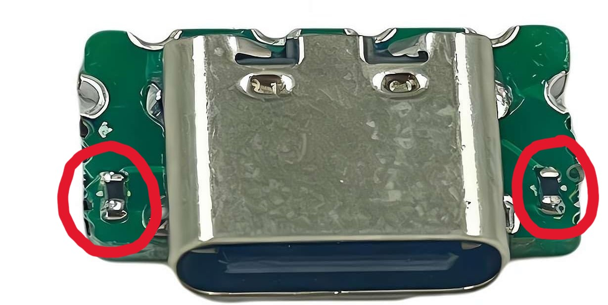
2.修理業者に問い合わせをする
以下のリンクはあすか修繕堂の問い合わせフォームである。 3DSの充電端子を、先程入手した抵抗付きのType-C基板に改造してほしい旨を伝える。

3.返信のメールから修理サービスを購入する
問い合わせ後にメールが届くので、そこに記載のリンクから修理サービスを購入する。 修理は成功報酬型となっていて、修理不可だった場合は全額返金される。 価格は2026年4月時点で5,478円+送料だった。
4.注文確認のメールに返信をする
注文後にメールが届くので、必要事項を記入して返信する。
5.3DSとType-C基板を発送する
発払いで3DSとType-C基板を発送する。 発送方法は指定されていないが、返送は修理サービス購入時に指定した返送方法で行われる。
自力で改造する方法
ここではType-C基板の入手後、自力で改造する方法を解説する。 機種はNewニンテンドー3DS LLを用いているが、他の機種は基板の取り出し方や充電端子の位置が異なる場合があるので注意する。 分解や基板の取り出し、はんだ付けやカバーの加工などが必要になるため、自信がない場合は修理業者に依頼することを推奨する。
方法
1.Type-C基板を入手する
以下のリンクから抵抗付きのType-C基板を入手できる。 この商品には画像の赤色の丸のように抵抗が2つ接続されているため、PD対応充電器で充電できる。
2.必要な機材を用意する
分解やはんだ付け、ケースの加工で必要な機材を入手する。 はんだリムーバーは必需品ではないが、既存の充電端子を取り外す際にはんだを溶かしやすくするためのものであり、これがないとはんだを溶かすのにかなり苦労する。


3.3DSの電源を切る

4.タッチペンとカセットを取り出す

5.バッテリーカバーの充電端子側2箇所のネジを外し、バッテリーカバーを外す

6.バッテリーとmicroSDカードを抜く

7.バックカバーの8箇所のネジを外し、オーディオジャック側を持ち上げる
バックカバーの充電端子側2箇所のネジは画像2枚目の赤色の丸の部分のゴムカバーを外すと現れる。

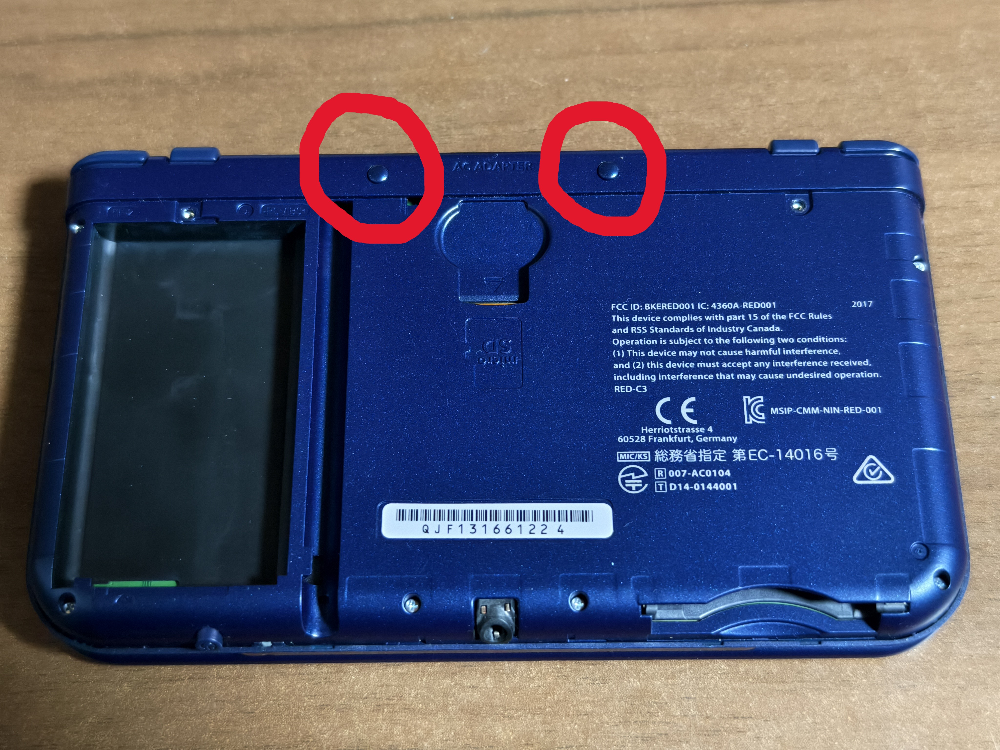
8.バックカバーの充電端子側2箇所のケーブルを外す
画像2枚目の赤色の丸の部分のケーブルを持ち上げて外す。

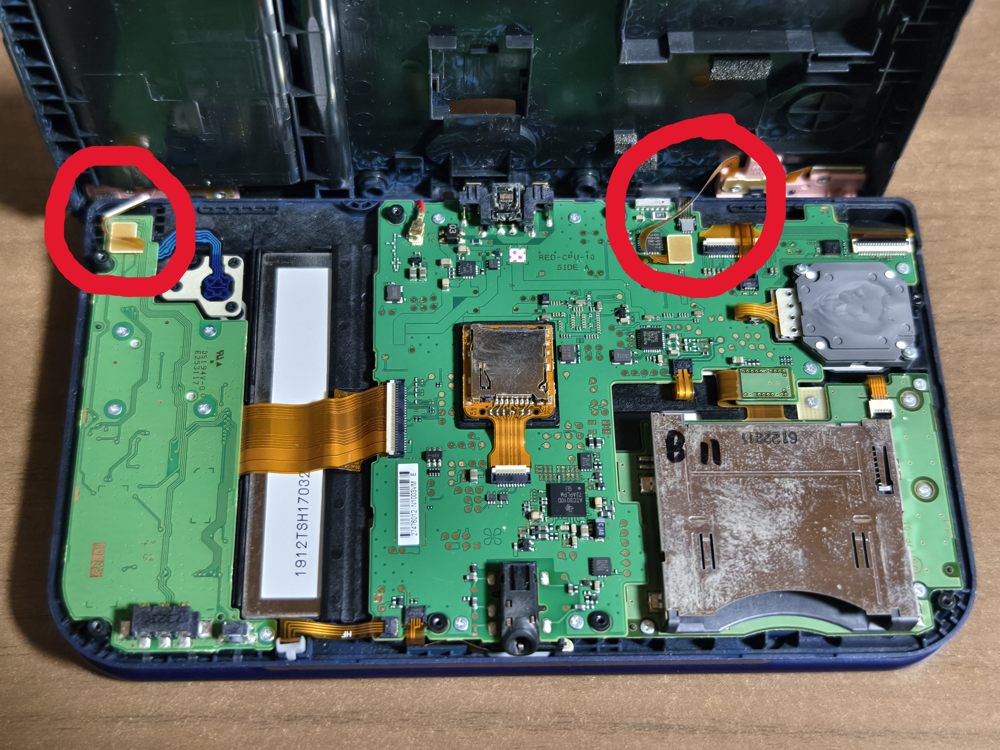
9.基板の12箇所のケーブルを外す
画像2枚目の赤色の丸の部分のケーブルは画像3枚目のようなロックがかかっているため、ラッチを持ち上げてから引き抜く。 青色の丸の部分のケーブルはそのまま引き抜く。 黄色の丸の部分は持ち上げて外す。

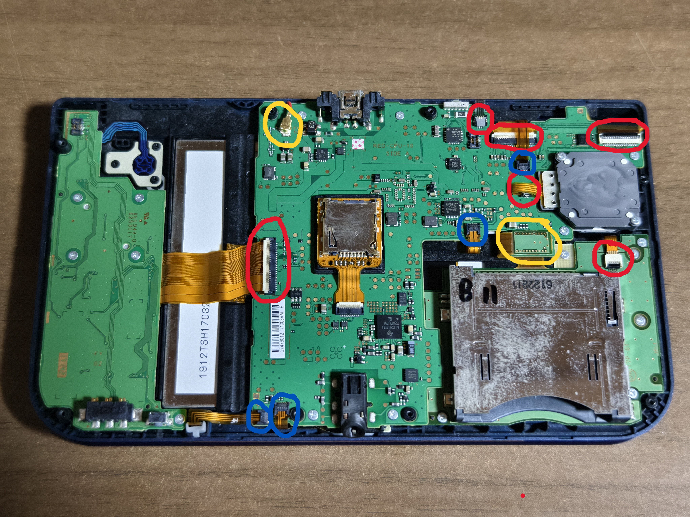
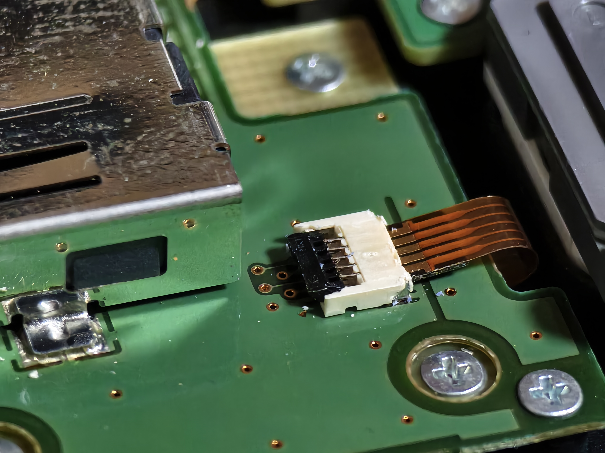
10.基板からスライドパッドを取り外す
画像2枚目の赤色の丸の部分がスライドパッドである。 4箇所のネジを外すとスライドパッドが取り外せる。

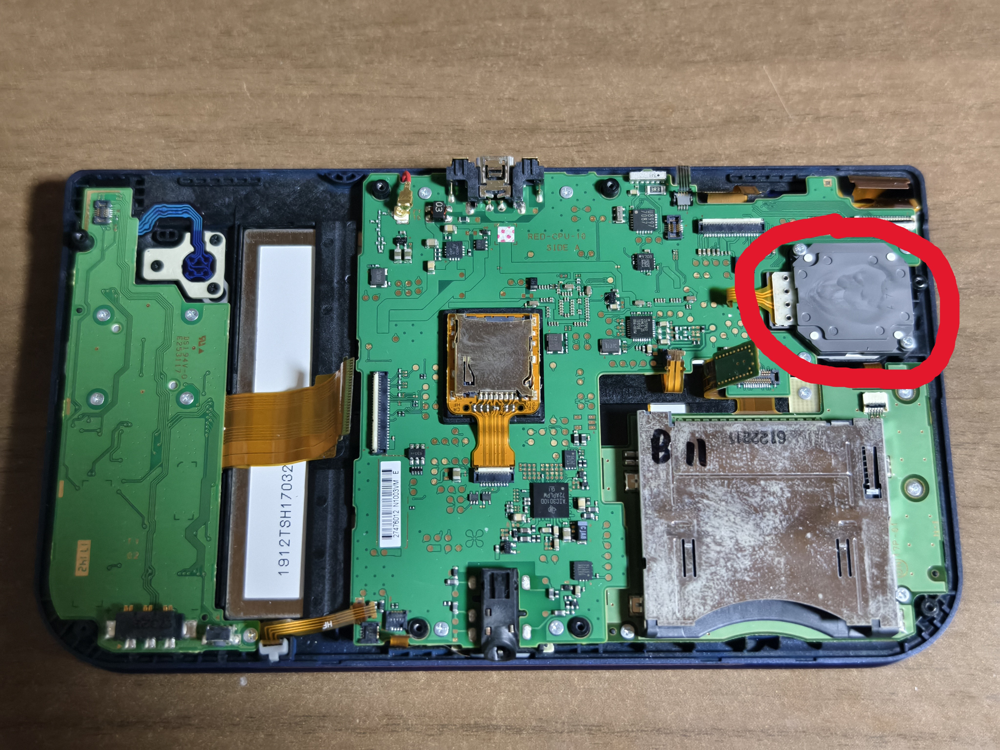
11.基板の6箇所のネジを外し、オーディオジャック側を持ち上げる
画像2枚目の赤色の丸の部分が外すネジである。

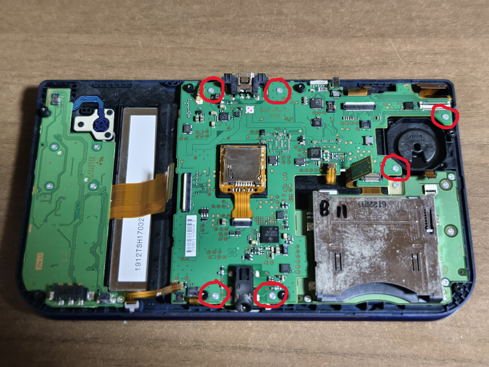
12.基板の裏側の2箇所のケーブルを外す
このケーブルはロックがかかっているため、ラッチを持ち上げてから引き抜く。
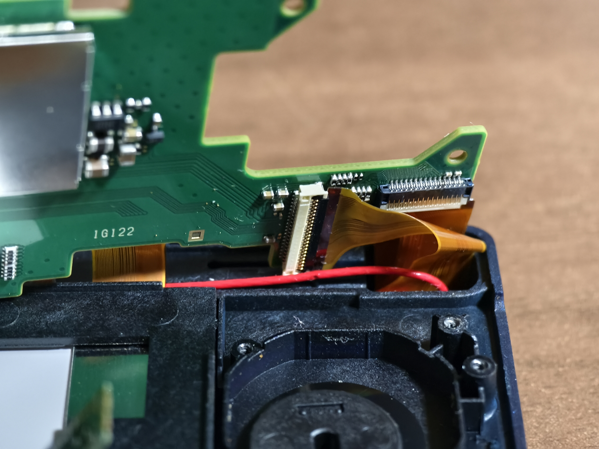

13.基板から充電端子を取り外す
表側(画像1枚目)ではなく、裏側(画像2枚目)から取り外す。 まず、既存のはんだにフラックスを塗る。 次に、はんだごてではんだリムーバーを溶かし、既存のはんだに混ぜる。 次に、はんだごてで既存のはんだを溶かし、充電端子を取り外す。 最後にはんだごてとはんだ吸取線で残りのはんだを取り除く。
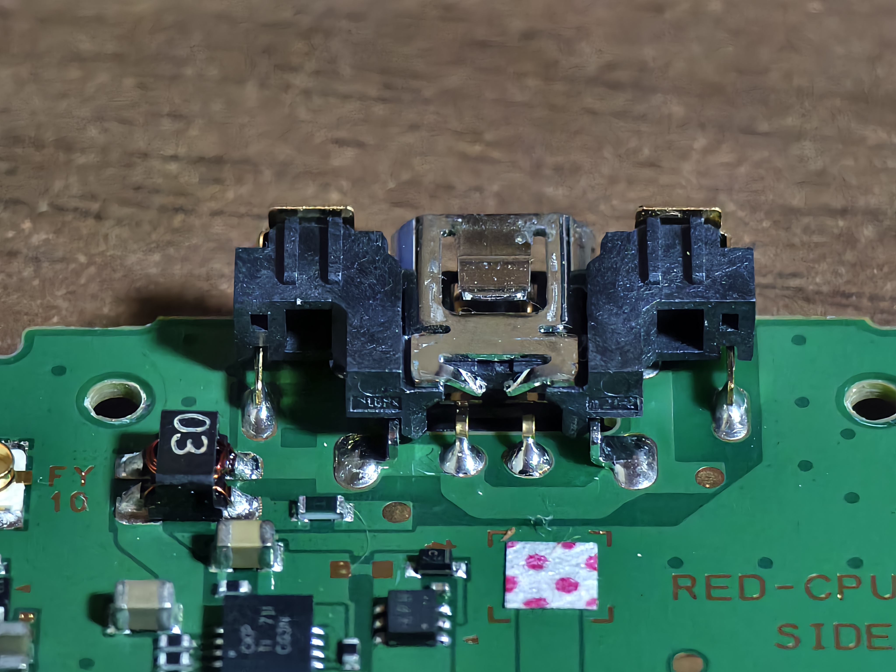
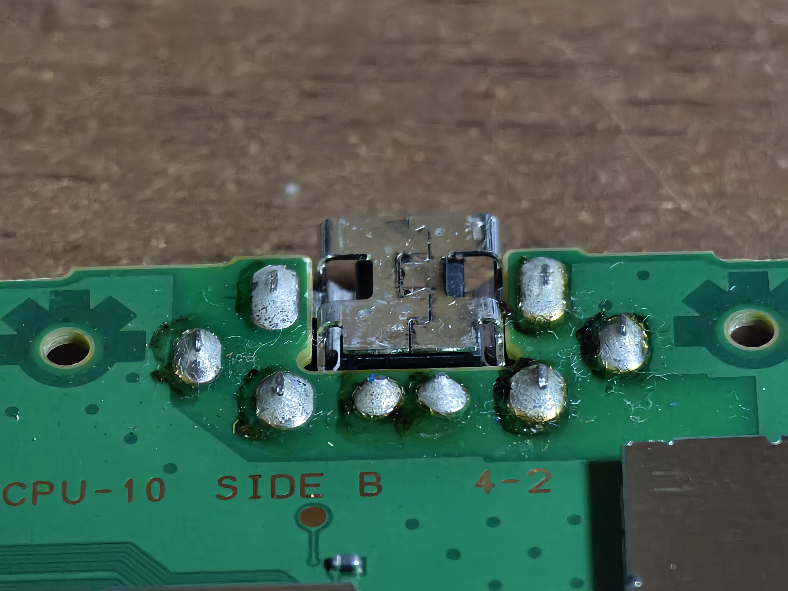
14.Type-C基板を実装する
画像1枚目と2枚目は裏側になっているが、Type-C基板の取り付けは表側で行う。 まず、画像2枚目の赤色の丸の部分、基板の穴をはんだごてではんだを溶かして埋める。 次に、画像3枚目の赤色の丸の部分、Type-C基板の半円の穴を基板の穴に合わせ、それぞれの穴をはんだで繋げる。
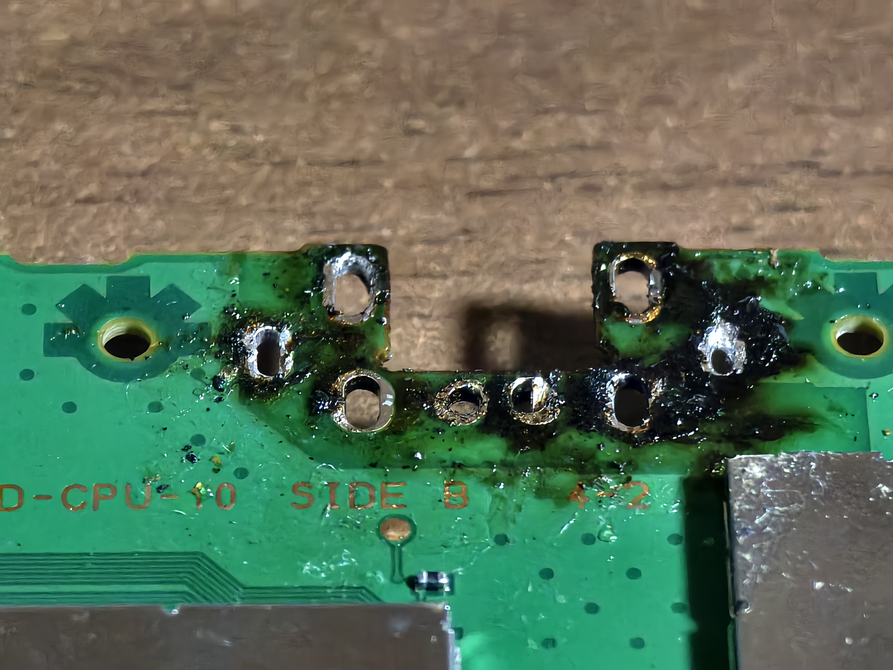
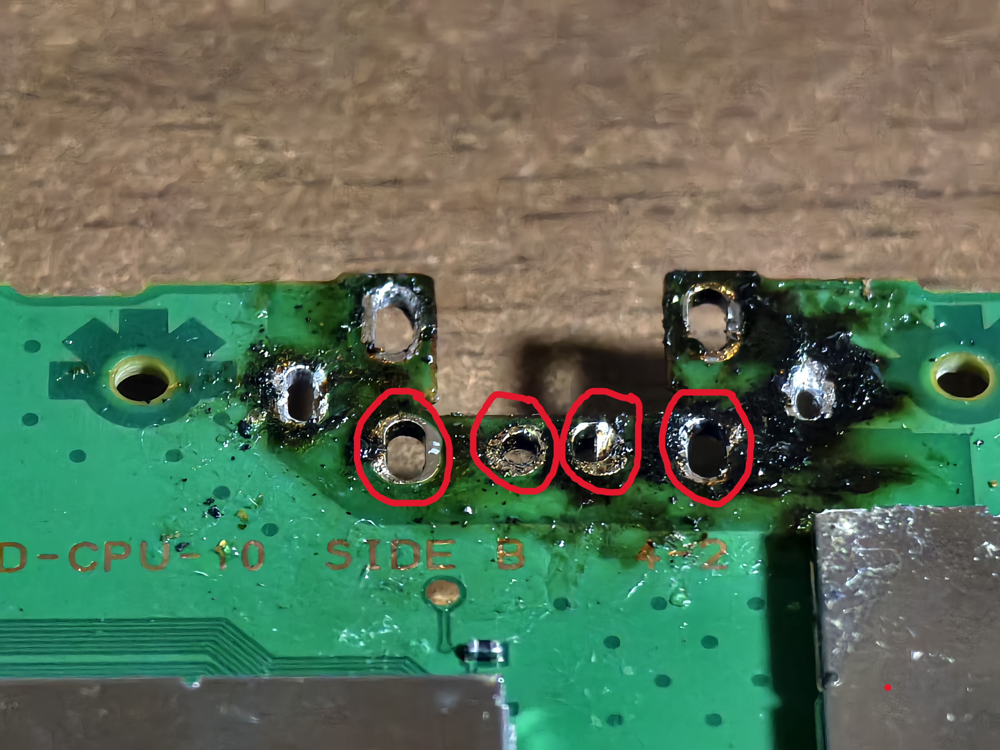
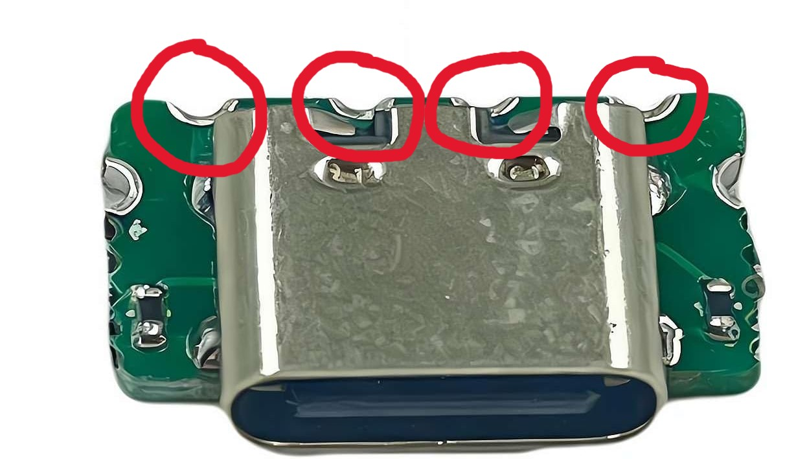
15.マルチテスターで導電チェックをする
マルチテスターを導電チェックモードにし、画像2枚目の赤色と青色の丸の部分のはんだそれぞれにテスターを接続して音が鳴らないことを確認する。 赤色の丸の部分のはんだはマイナス、青色の丸の部分のはんだはプラスになっているが、もし音が鳴った場合はショートが起きているため、2つのはんだがつながっていないかなどを確認する。 また、Type-C端子の金属部分とマイナスのはんだそれぞれにテスターを接続して音が鳴ることを確認する。 もし音が鳴らなかった場合はマイナスのはんだが基板とType-C基板を正しく接続できていないため、もう一度はんだ付けする。
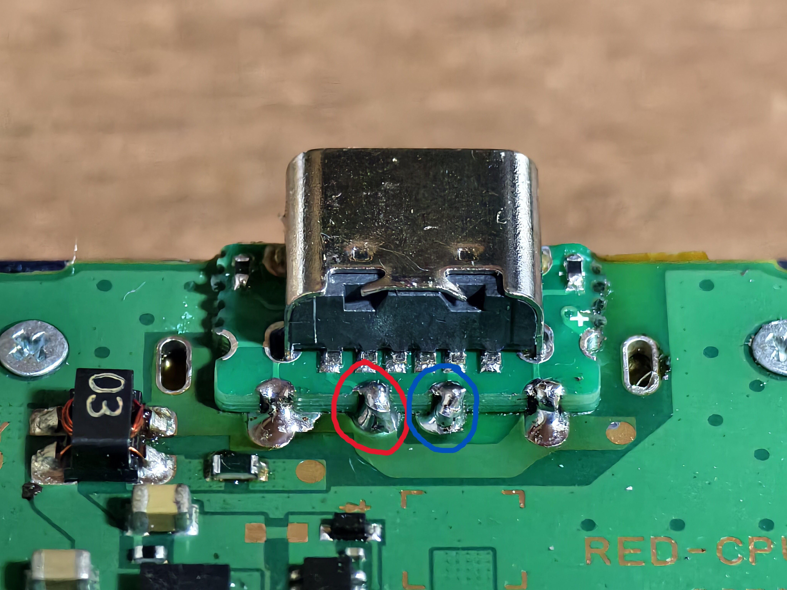
16.外した基板とスライドパッドを元に戻す

17.バックカバーの充電端子の周りを加工する
従来の充電端子よりもType-C端子のほうが大きいため、バックカバーの加工が必要になる。 バックカバーの充電端子の穴をニッパーやダイヤモンドヤスリでType-C端子が収まるように加工する。 また、画像2枚目のようにType-C基板に付属していた充電端子カバーを加工して余分なスペースを埋める。

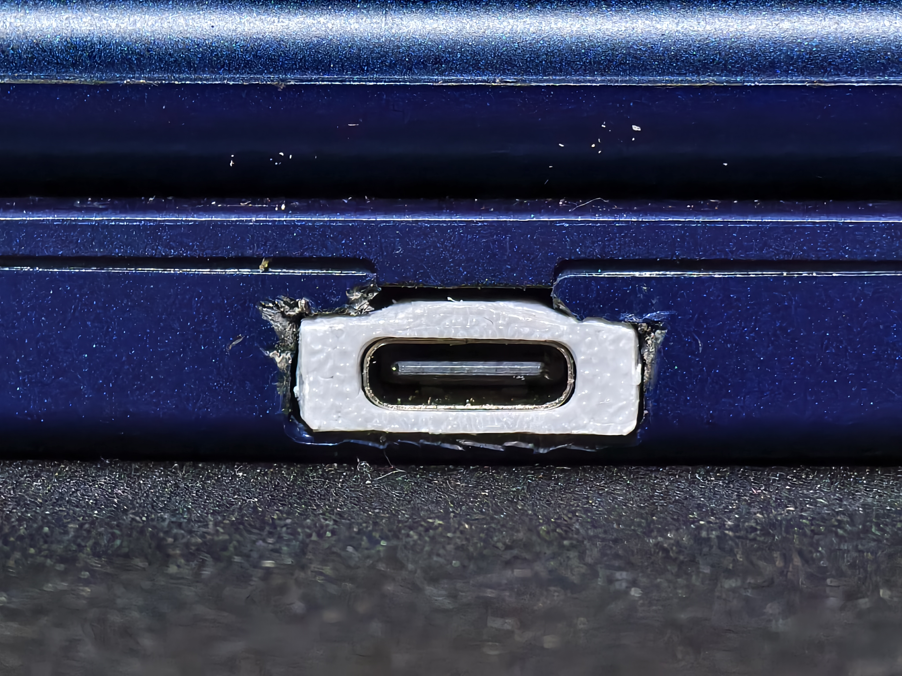
18.外したバックカバー、バッテリー、microSDカード、バッテリーカバーを元に戻す
元に戻したら動作確認をし、充電ができることを確認する。

3DS用のType-C変換ケーブルと何が違うか
もちろん、以下の画像のようなType-Cを3DSの充電端子に変換するケーブルを使用しても、Type-C充電器で充電できるようになる。 しかし、このような変換ケーブルはPD対応充電器に対応しておらず、Type-C化サービスで充電端子を改造した際と同じように実質的にA to Cケーブルでしか充電できなくなる。 また、3DS用の充電器が不要になっても、代わりにこの変換ケーブルが必要になるので煩わしさは変わらない。 一方、抵抗付きのType-C基板を使って充電端子を改造すれば追加のケーブルも必要もなく、PD対応充電器でも充電できるようになる。 充電ケーブルをType-C、もっと言えばC to Cで統一している人にとっては非常に理想的な環境と言える。

プロフィール

高度情報社会の最先端を駆け抜ける